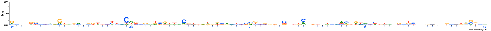

MODEL
Lambda: 5.0
Dataset structure: 800 sequences with 100 features
Number of architectures in the best model: 1
Likelihood of best model: -188976.279156
Architecture 1: 800 sequences with 100 important features
Sequence logo for the important positions in architecture 1

NOTE: All important positions in the logos are followed by an asterisk symbol and are coloured blue